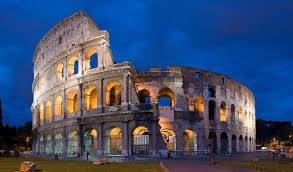

"Those who forget their past are doomed to repeat it"
John doe
Unveiling the past, revealing ancient wonders.
The website "Ancient Wonders: Unveiling the Past" is a captivating online platform dedicated to showcasing fascinating facts, discoveries, and stories about ancient civilizations. It serves as an informative and engaging resource for individuals passionate about history, archaeology, and the wonders of antiquity.
The website offers intuitive navigation, allowing users to easily explore different categories of ancient facts. A prominent menu bar or sidebar presents categories such as "Egyptian Civilization," "Greek and Roman Empires," "Mesopotamian Cultures," "Mysterious Artifacts," "Lost Cities," and more. Each category leads to a dedicated page filled with a wealth of information, visuals, and intriguing insights.
"Timeless wonders unveiled: Explore ancient ruins."

Step into a world lost in time. Welcome to our captivating website dedicated to showcasing the mesmerizing beauty and rich history of ancient ruins. Immerse yourself in the stories carved into weathered stones, the echoes of civilizations long gone. Explore the remnants of once-mighty empires, from towering pyramids to crumbling temples and enigmatic monuments. Let your curiosity guide you through the intricate details of architectural marvels and the enigmatic symbolism of ancient art. Journey through the vast landscapes that whisper tales of conquest, mythology, and the rise and fall of great civilizations. With vivid imagery and expert insights, we bring these ancient ruins to life, bridging the gap between past and present. Wander through the digital corridors of history, unraveling mysteries, and uncovering the secrets of our shared human heritage. Join us as we unlock the hidden treasures of the past and celebrate the enduring legacy of ancient civilizations.
Step into a world lost in time. Welcome to our captivating website dedicated to showcasing the mesmerizing beauty and rich history of ancient ruins. Immerse yourself in the stories carved into weathered stones, the echoes of civilizations long gone. Explore the remnants of once-mighty empires, from towering pyramids to crumbling temples and enigmatic monuments. Let your curiosity guide you through the intricate details of architectural marvels and the enigmatic symbolism of ancient art. Journey through the vast landscapes that whisper tales of conquest, mythology, and the rise and fall of great civilizations. With vivid imagery and expert insights, we bring these ancient ruins to life, bridging the gap between past and present. Wander through the digital corridors of history, unraveling mysteries, and uncovering the secrets of our shared human heritage. Join us as we unlock the hidden treasures of the past and celebrate the enduring legacy of ancient civilizations.